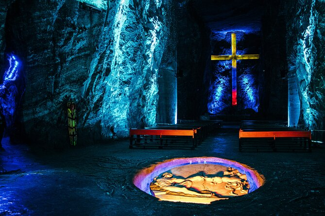
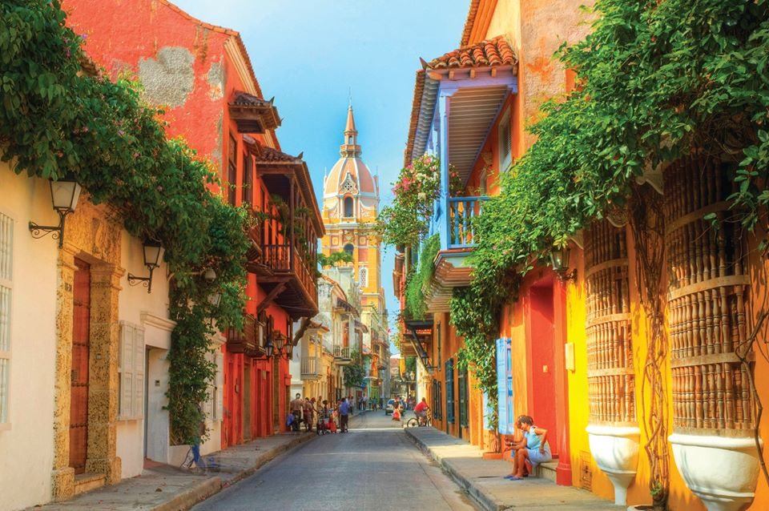
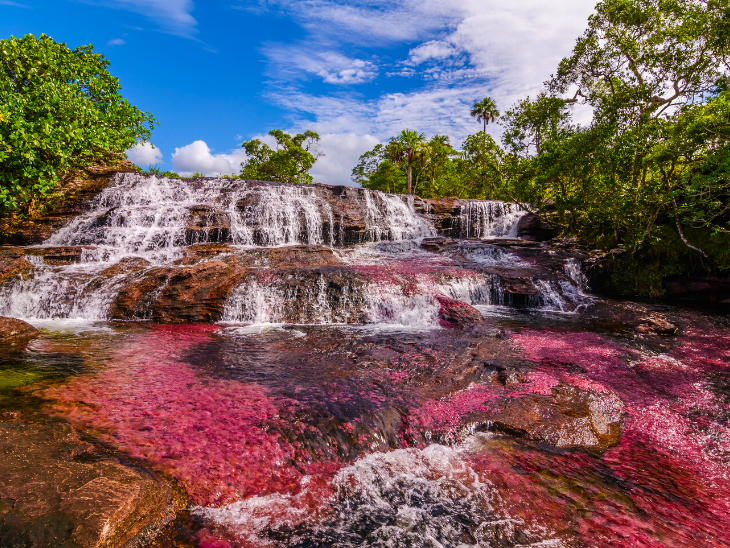

Catedral de Sal de Zipaquirá
Uma impressionante catedral construída no interior de uma mina de sal, localizada próximo a Bogotá. Com esculturas em sal e iluminação colorida, é um lugar único que mistura religião, arquitetura e natureza.

Cartagena das Índias
Cidade colonial à beira-mar, famosa por suas muralhas, ruas coloridas e praias caribenhas. O centro histórico, declarado Patrimônio da Humanidade pela UNESCO, é cheio de história, cultura e romantismo.

Caño Cristales
Conhecido como "o rio das cinco cores", este rio na região de Meta exibe cores vibrantes devido a algas aquáticas. Entre julho e novembro, suas águas parecem um arco-íris líquido, sendo um dos tesouros naturais da Colômbia.
